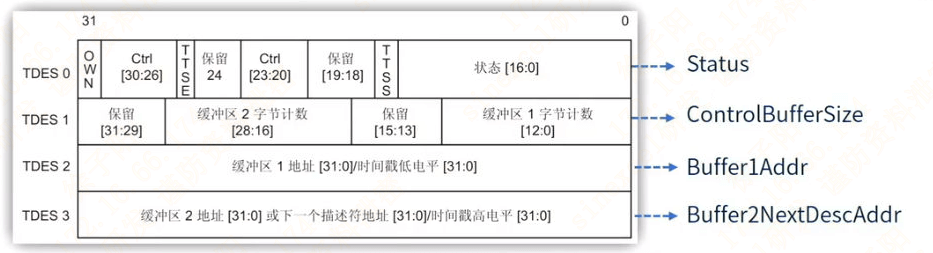

lwIP入门 - 硬件层
lwIP入门 - 硬件层
1. lwIP结构框图
| 层次 | 作用 |
|---|---|
业务逻辑 | server |
lwIP API | 应用层HTTP MQTT等 |
lwIP Core | 内核层TCP/IP协议 |
Hardware | 硬件层 MAC内核 |
2. 硬件层 PHY
数据从
RJ45进入, 接收光电模拟信号数据进入
PHY芯片, 警告解调和A/D转化为通过MII或者RMII将数据转发到MAC内核MAC内核处理数据后(解析帧头帧尾), 将数据转入
RxFIFO(2kB)缓冲区
PHY 根据 IEEE802.3 定义了 0~15寄存器, 其他为自由定义的寄存器, 需要参考芯片手册进行操作
通常操作的为 BCR`寄存器, 用于控制PHY的双工和速度, 或者读取 `BSR 寄存器, 用于读取PHY的状态(双工和速度)
bit8: 双工模式, 0: 半双工, 1: 全双工
bit13: 速度, 0: 10M, 1: 100M
3. 硬件层 以太网DMA描述符
发送: 不需要CPU参与下, 把描述符指向的缓冲区数据传入到 TxFIFO中
接收: 不需要CPU参与下, 把RxFIFO中的数据传入到描述符指向的缓冲区中
一个以太网描述符精简例子如下
1 | |

TDES0[bit31]: 0: CPU可以把数据拷入描述符, 拷贝完成后置1, 告诉DMA可以发送数据
RDES0[bit31]: 1: MAC将数据从RxFIFO传入Rx描述符中, 拷贝完成后置0, 告诉CPU可以接收数据
lwIP入门 - 硬件层
https://simonkimi.githubio.io/2025/12/18/lwIP入门-硬件层/